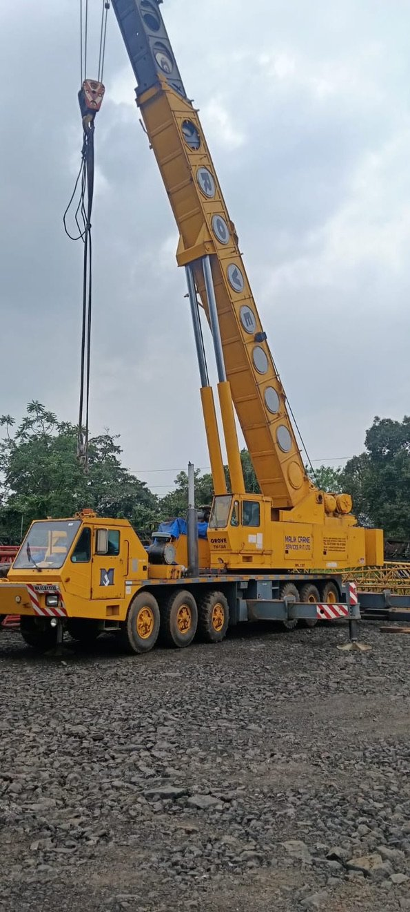

Lifting Your Projects Higher
Malik Crane Services Private Limited, established in 1985, is a trusted provider of crane services and trading solutions, offering a comprehensive range of equipment to meet diverse material handling needs. Our portfolio includes Crane Rental Services, Truck Crane Rental Services, Construction Crane Rental Services, Crawler Crane Rental Services, and Manlift Crane Services.
Our equipment and services are widely used across various industries for efficient material handling applications, and are valued for their reliable performance, operational efficiency, and ease of use. We offer flexible options across a wide range of technical specifications to suit the specific requirements of our clients.
With a strong and well-established vendor network supported by high production capacity, we are also well-equipped to fulfill bulk orders for cranes. Every product and service is subjected to rigorous quality assurance processes to ensure full compliance with international standards of quality and safety.
For customer convenience, we offer multiple payment options, including cash, online transfers, and credit card payments, tailored to the needs and preferences of our clients.

Industry Leadership &
Proven Trust
Serving clients across India for over 30 years
ISO certified quality & safety standards
Trusted by Leading Construction Companies in India
Larsen & Toubro Limited • Reliance Industries Limited • Tata Projects Ltd • Essar Projects Ltd • NCC Ltd • ThyssenKrupp Industries India Ltd • Alstom Projects • Bridge and Roof • TRF Ltd • Jindal Steel & Power Ltd • Shree Cement Ltd
Our Projects